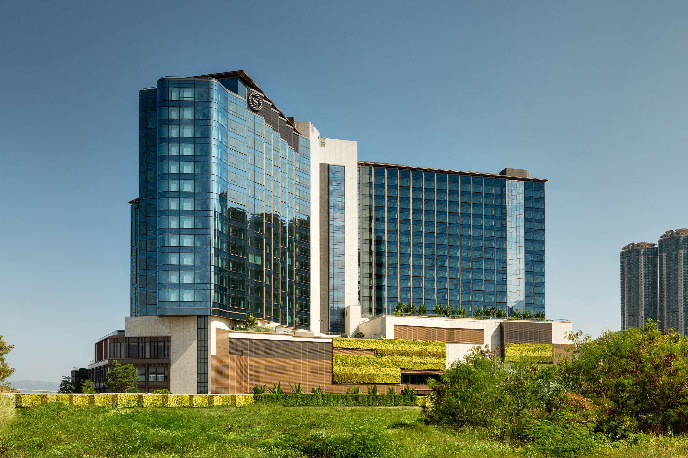
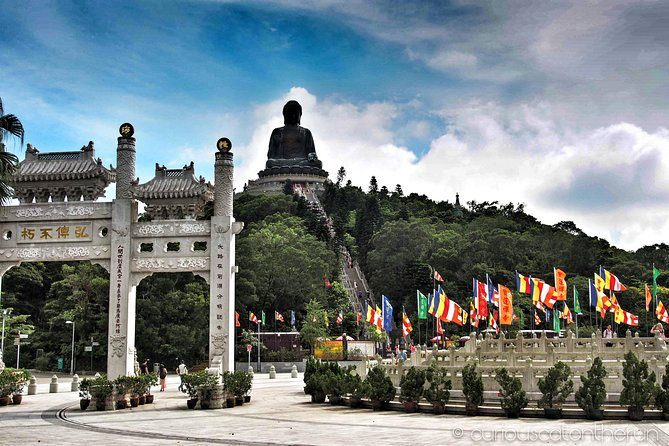
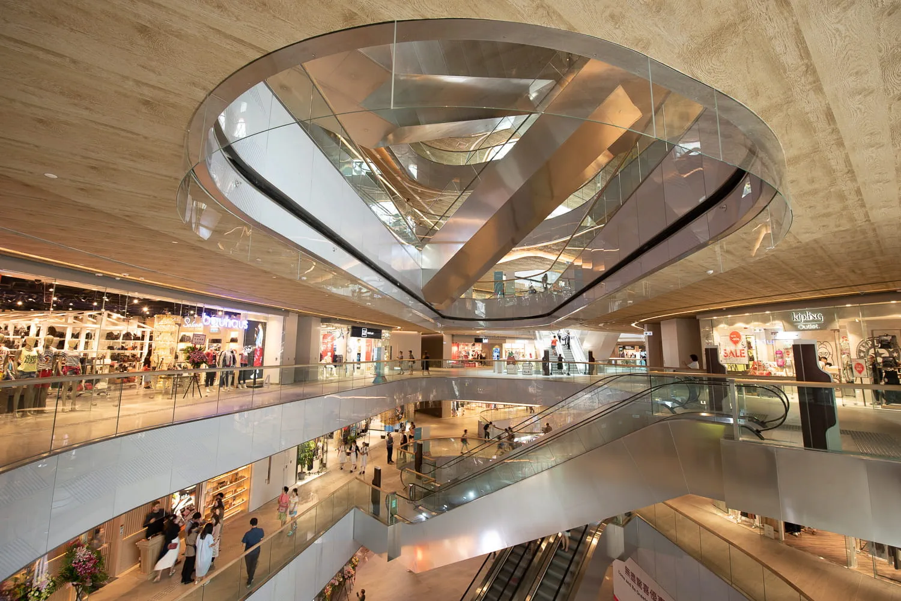
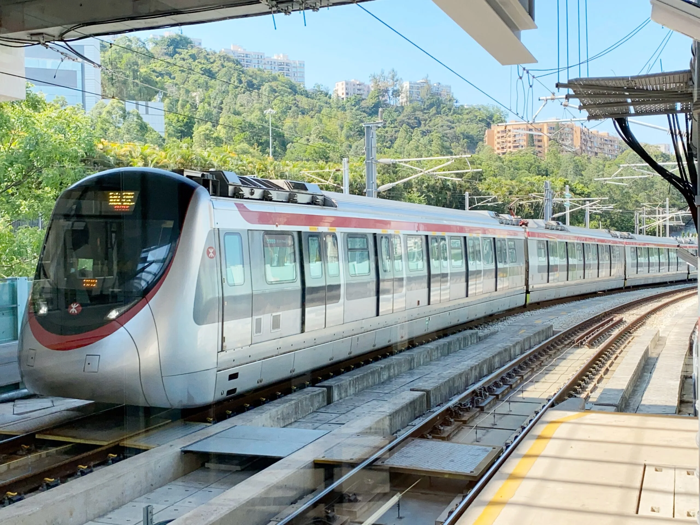

Tung Chung
Chamber of Commerce
News
The second Sheraton Hotel in Hong Kong, The Sheraton Hong Kong Tung Chung Hotel is set to be the new social hub in Tung Chung for locals and travelers Sheraton Hong Kong Tung Chung Hotel, situated in picturesque Tung Chung, Lantau, opens its doors today. The new hotel will serve as the neighborhood hotspot for locals and travelers to enjoy meaningful connections and elevated guest experiences and adventures within and beyond the hotel.
Calendar



